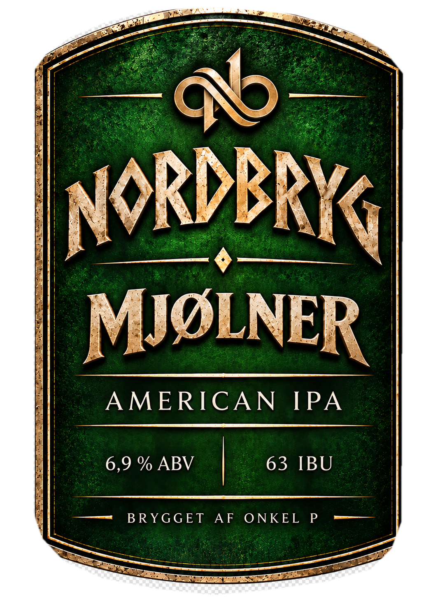
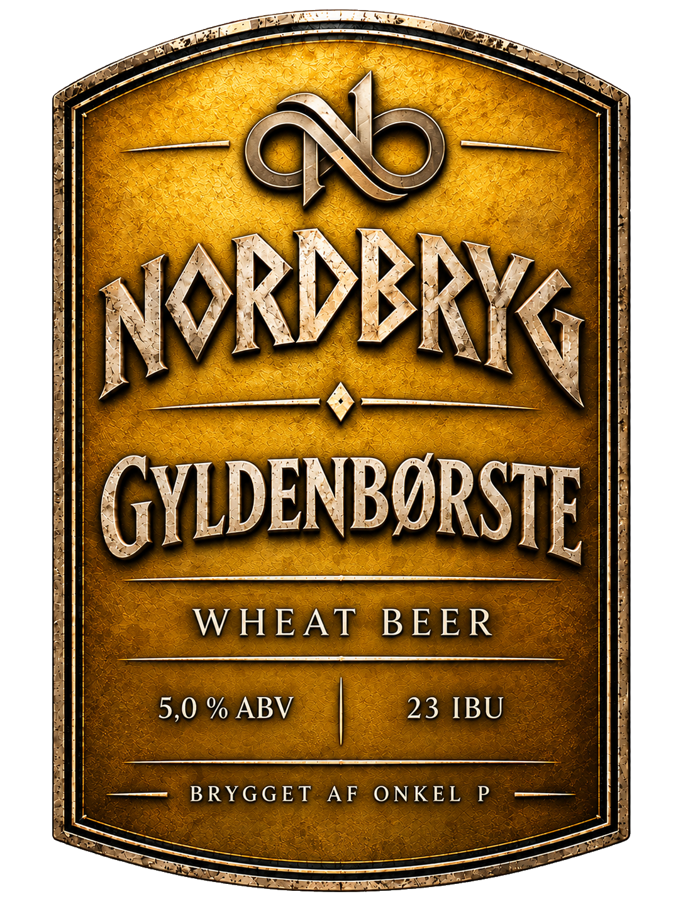

Nordbryg
Ølbrygning som hobby.
Nordbryg er mit lille hjørne af Onkel P, hvor jeg samler de øl, jeg har brygget gennem tiden.
Det handler først og fremmest om hyggen ved at brygge, prøve idéer af og se, hvad der kommer ud af det. Med tiden får de forskellige øl deres egne etiketter og beskrivelser her på siden.
Mjølner
American IPA

Type: American IPA
Alkohol (ABV): 6,9 %
IBU: 63
Humle: Nugget og Amarillo
Volumen: 20 liter
Farve: 22 EBC
Beskrivelse: Mjølner er en American IPA på 6,9 % ABV og 63 IBU, brygget med Nugget og Amarillo.
Gyldenbørste
Wheat Beer

Type: Wheat Beer
Alkohol (ABV): 5,0 %
IBU: 23
Humle: Perle og Hallertauer Mittelfrüh
Volumen: 25 liter
Farve: 6 EBC (Pale yellow)
Beskrivelse: Gyldenbørste er en Wheat Beer på 5,0 % ABV og 23 IBU, brygget med Perle og Hallertauer Mittelfrüh.
Flere øl følger...
Efterhånden som mine andre bryg får deres egne navne og etiketter, kommer de også med her.